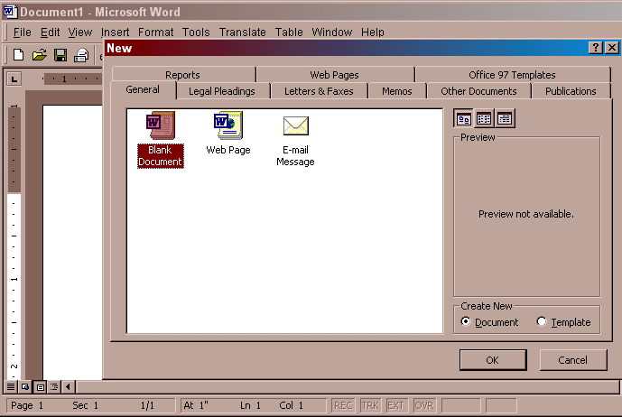
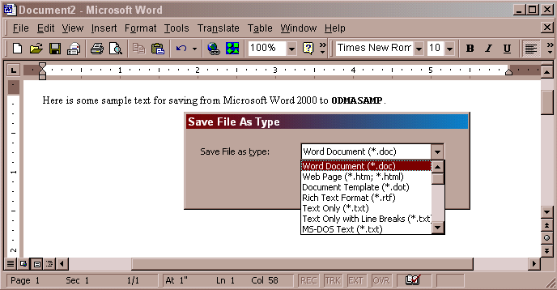
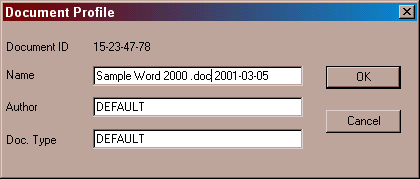
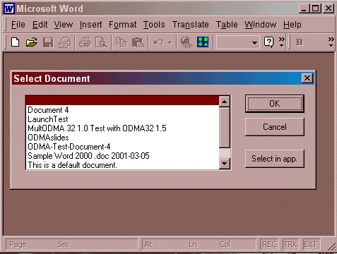

ODMASAMP with Word on NT
Category: Fatal Error - Critical Incident ID: X000100 Priority: 9 - Urgent Status: Under Investigation Component: ODMA32.dll2.0.0 andODMASAMP2.0.0 with Microsoft Word 2000 on Windows NT.
- Repaired in: tbd
Related information:- X001000: Microsoft Word 2000 Save Failure
X000200: MS Office Between Win98 & NT- Q000606: Troubleshooting Microsoft Word ODMA Integrations
Q000602: Where Is Support Information for Microsoft Office?
Q000001: Configuring MS Office for ODMAAssigned To: tbd
- Reported By:
- Boon Long (2000-01-27)
Date Logged: 2000-08-11
Date Recorded: 2001-03-04Date Closed: none
Content
ODMASAMP FailureContributors
When testing ODMA integration using Microsoft Word 2000, ODMA 2.0, and the ODMA 2.0 Sample DMS,
ODMASAMP, there are conditions under which a document is not saved properly.It appears that the problem is not with
ODMASAMP, but with Word 2000 and that the incident is the same one covered by
- X001000: Word 2000 Save Failure
- X000200: Word 2000 Between Win98 & NT
Please consult those incident reports for the latest status and resolution.
This incident report is being kept open until investigation confirms that there is no
ODMASAMPdefect that contributes to the reported case or other incidents that people experience.Why is this incident critical?
- Difficulty in troubleshooting an ODMA configuration threatens the usability of ODMA and the confidence of users in being able to operate successfully via ODMA integrations. Having the troubleshooting mechanisms be reliable and trustworthy is critical to ODMA operation. Reliable and confident usage of
ODMASAMPis a key tool for ODMA troubleshooting.- Microsoft Word is regarded as the benchmark ODMA-aware application, in production and in development and testing. An incident that exposes ODMA-integrated applications to sporadic data loss and lost work through use of Microsoft Office is of serious concern.
If you are having difficulties with
ODMASAMPoperating properly with Microsoft Word 2000, or you want to useODMASAMPto isolate/confirm a possible ODMA integration problem in Microsoft Word 2000, carry out the procedure in this section:
- Ensure that Microsoft Office is configured properly for operation with ODMA. See Q00001: Configuring MS Office for ODMA.
- Make sure that you have the latest stable version of ODMA Software installed, including the latest version of
ODMASAMP. See Q000603: Latest ODMA Software.- Perform the configuration operations necessary to have
ODMASAMPbe the global default DMS for all ODMA-aware clients, or modify the Windows Registry to makeODMASAMPthe specific default assigned for Microsoft Word.After configuring Word 2000 to operate with ODMA, conduct integration trials with unimportant test documents.

Figure 1. Typical Word 2000 File | New dialog.
Create a test document in Word 2000, using File | New. At this point, there is no indication that a document-management system will be used. It is only when the user decides to keep the document that any ODMA-related dialogs appear.
After you have selected the template to use and entered some text, select File | Close. You should be asked whether you want to save the document or not. Say that you do want to save the document. At this point, if the ODMA configuration is set properly, you will be invited to specify the format of document that you want Word 2000 to deliver to the DMS.

Figure 2. Typical Save File As Type dialog when a DMS is present.
After you select the document type to use, you will finally see the
ODMASAMPdialog for creating a rudimentary document profile:
Figure 3.
ODMASAMPDocument Profile DialogIf instead the document is closed without any invitation to save the document, you may be seeing the Word 2000 Save Failure incident.
Finally, you should be able to see the document that you created using the Windows 2000 File | Open dialog. This will lead to the rudimentary ODMASAMP dialog, if the ODMA configuration is operating properly:

Figure 4. Word 2000 File | Open response from
ODMASAMPIf you do not see any DMS-specific dialogs, that signifies that Microsoft Word is not detecting the presence of ODMA or ODMA is unable to initiate operation with a DMS. In those cases, Word 2000 reverts to file-oriented operation as if no DMS is installed.
The following actions are being taken to resolve this incident:
This incident has occurred with the following configuration:
Microsoft Word 2000 Microsoft Windows NT 4.0 with ODMA Connection Manager ODMA32.dll2.0.0ODMASAMP2.0.0 Sample DMS
ODMASAMP FailureSketch the way that we demonstrate this is not an
ODMASAMPproblem..
- Dennis Hamilton
- reviewed old ODMA Tech mail for untracked incidents, logged this incident (2000-08-11) and then recorded the incident (2001-03-04) as part of having all backlog recorded. Identified apparent relationship to X001000 and X000200 and initiated further investigation to confirm that.
- Boon Long
- provided the initial notification that the correct functions in
ODMASAMPwere not being exercised in some ODMA configurations.
created 2001-03-04-08:17 -0800 (pst) by orcmid
$$Author: Orcmid $
$$Date: 01-03-05 16:06 $
$$Revision: 5 $